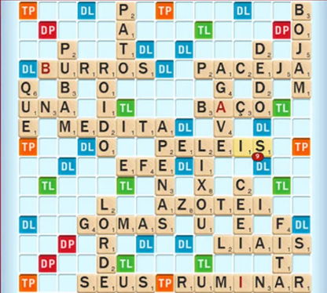

Projetando Funções e Lendo Código Python
PASIA - Aula P.2
DAC - ICET - Universidade Federal de Lavras
20/08/2025
O conteúdo dessa aula é baseado em partes dos capítulos 2, 3 e 4 do livro abaixo.

Características de boas funções (cont.)
Na aula anterior, vimos um guia para criarmos boas funções:
- Uma tarefa clara a realizar
- Comportamento claramente definido
- Poucas linhas de código
- Uso geral em vez de uso específico
- Entrada e saída claras
Exemplos de boas funções folha
- Calcular o volume de uma esfera
- Dado o raio da esfera calcula seu volume.
- Encontrar o maior número em uma lista
- Dada uma lista, retorna seu maior valor.
- Verificar se a lista contém um valor específico
- Dada uma lista e um valor, retornar True se ela tem o valor e False em caso contrário.
Exemplos de boas funções folha
- Exibir o estado de um jogo de Xadrez
- Dada uma lista 2D representando o tabuleiro do jogo, exibir o tabuleiro na tela em formato texto.
- Inserir um valor em uma lista
- Dada uma lista, um novo valor e uma posição na lista, retornar uma nova lista que é a lista original com o novo valor inserido na posição especificada.
Funções folha ruins
Vamos agora ver alguns exemplos de funções folha ruins e porque elas são ruins.
Pedir informações fiscais de um usuário e calcular seu imposto de renda
- Calcular imposto de renda envolve vários cálculos que deveriam ser implementados em funções separadas.
Funções folha ruins
Remover o maior valor de uma lista
- Pode não parecer ruim a princípio, mas veja que estamos fazendo duas coisas.
- Precisamos encontrar o maior valor na lista.
- E precisamos remover um valor da lista.
- Assim, seria mais reutilizável ter uma função folha para cada subtarefa.
- Obs.: pode ser útil criar uma função não folha que chama as outras duas se isso for usado várias vezes em um sistema.
Funções folha ruins
Dado um conjunto de dados estatísticos de partidas de futebol, retornar os nomes dos zagueiros que correram mais de 8 km
- Há muita informação específica nesse caso.
- Claramente a distância percorrida poderia ser um parâmetro.
- Mas, se pensarmos bem, inclusive a posição dos jogadores poderia ser um parâmetro.
- Melhor ainda seria se a própria estatística fosse um parâmetro.
- Poderíamos querer consultar, por exemplo, o nome dos goleiro que fizeram mais que 10 gols.
Funções folha ruins
Determinar o melhor filme de todos os tempos
- O problema dessa função é que ela é muito vaga.
- O que define o que é um bom filme?
- Quais filmes deveriam ser considerados?
- Seria mais claro se a função recebesse uma lista de filmes com suas respectivas avaliações e um número limite de avaliações.
- E retornasse os filmes melhor avaliados que tivessem, no mínimo, o número de avaliações passado como limite.
Funções folha ruins
Jogar Call of Duty
- Precisa explicar? 🤓
Dica: escolhendo sugestão do Copilot
Quando pedimos ao Copilot para gerar um código, podemos avaliar outras possíveis sugestões dele.
Para exemplificar isso, suponha que vamos criar um programa para jogar Scrabble.

- É um jogo de tabuleiro baseado em palavras-cruzadas.
Dois jogadores devem ir completando palavras em um tabuleiro com peças de letras.
- E, cada vez que um jogador consegue incluir uma palavra, ele ganha pontos de acordo com as letras da palavra.
Vamos trabalhar aqui apenas com a função que calcula os pontos de uma palavra.
- O cabeçalho e docstring abaixo mostram como é o cálculo na versão do jogo em português.
def numero_de_pontos(palavra):
"""
Cada letra na palavra vale os seguintes pontos:
a, e, i, o, u, m, s, r, t: 1 ponto
d, l, c, p: 2 pontos
n, b, ç: 3 pontos
f, g, h, v: 4 pontos
j: 5 pontos
q: 6 pontos
x, z: 8 pontos
palavra é uma palavra formada por letras caracteres minúsculos
Retorna a soma dos pontos de cada letra da palavra
"""Uma possível resposta do Copilot para o corpo da função é:
O código parece razoável, e nosso próximo passo seria testar a função.
- Mas o ponto que quero mostrar aqui é como escolher as sugestões do Copilot.
Quando o Copilot sugere o código, ele aparece esmaecido e em itálico.
- Antes de apertarmos TAB para aceitar o código,
- podemos avaliar outras sugestões que o Copilot oferece.
- Isso pode ser feito passando o mouse sobre o código e escolhendo no painel que aparece acima do código.
- Ou pelo atalho ALT + ] para ver a próxima sugestão ou ALT + [ para ver a anterior.
Uma segunda sugestão feita pelo código para o corpo da função foi:
pontos = {
'a': 1, 'e': 1, 'i': 1, 'o': 1, 'u': 1, 'm': 1, 's': 1, 'r': 1, 't': 1,
'd': 2, 'l': 2, 'c': 2, 'p': 2,
'n': 3, 'b': 3, 'ç': 3,
'f': 4, 'g': 4, 'h': 4, 'v': 4,
'j': 5,
'q': 6,
'x': 8, 'z': 8
}
total = 0
for letra in palavra:
total += pontos.get(letra, 0) # Adiciona o valor da letra ou 0 se não estiver no dicionário
return totalRepare que ela é bem diferente da anterior.
Essa segunda sugestão usa um dicionário para guardar o valor de cada letra.
- Um dicionário do Python é uma estrutura similar a um
HashMapdo Java.
No código, o dicionário pontos usa as letras como chaves e os pontos correspondentes como valores.
- Assim, ao percorrer a palavra uma letra de cada vez.
- podemos consultar o dicionário para buscar quanto vale a letra.
Em uma terceira sugestão, o Copilot fez a soma dos pontos em uma única linha, trocando o trecho
por
- Esse tipo de construção usando list comprehension é muito comum em Python.
Dica
Você pode fazer com o que o painel de escolha das sugestões do Copilot fique sempre visível, para não precisar passar o mouse sobre o código para acessá-lo.
Para isso, quando ele aparecer uma vez, acesse os botão de três pontos ao final do painel e escolha a opção Always show toolbar.
Para fechar o exemplo, suponha que o Tião está jogando Scrabble
- e tem três palavras que poderiam ser encaixadas agora: zape, pazes e pizza.
- ele gostaria de saber qual palavra dá mais pontos.
De acordo com o guia para criarmos boas funções essa não é uma boa função, por que?
- Ela poderia ser mais geral, funcionando para qualquer quantidade de palavras.
- Poderíamos, por exemplo, receber uma lista de palavras como parâmetro.
Vamos então melhorar a definição da função.
Escolhendo entre as sugestões do Copilot, essa foi outra opção:
Qual das duas opções você prefere?
Talvez seja prematuro escolher sem fazer testes.
Veja esse teste feito com a segunda opção:
Esse erro não ocorreria na primeira opção.
A dica portanto é:
- Para qualquer que seja a sugestão escolhida: é necessário sempre testar!
A segunda opção poderia ser alterada para a acrescentar o mesmo if da primeira opção.
- Nesse caso, qual você escolheria?
- Sugestão: depende do seu objetivo.
- A primeira opção é mais legível.
- A segunda é mais compacta.
Demonstrando o uso do Copilot para Processamento de Dados
Vamos agora fazer algo mais interessante.
- E que já dê uma ideia de como podemos usar o Copilot em tarefas de processamento de dados.
Nós vamos utilizar um conjunto de dados (dataset) da plataforma Kaggle.
- Uma plataforma de competição de ciência de dados e aprendizado de máquina.
- Que tem milhares de conjuntos de dados dos mais variados assuntos.
Vamos trabalhar com dados sobre futebol.
- Acesse a página do dataset All footeball player stats in top 5 leagues 23/24.
- São dados estatísticos dos jogadores das 5 principais ligas de futebol europeias.
- Veja na página quais são os dados disponíveis e uma amostra dos dados.
Vamos baixar os dados para usar em nosso programa. Para isso:
- Clique em
Download→Download dataset as zip.- Logue no Kaggle ou crie uma conta se não tiver (pode ser logando com a conta do Google).
- Descompacte o arquivo zip baixado.
- Crie uma pasta para o projeto da aula de hoje e copie para ela o arquivo
top5-players.csv.
Vamos agora escrever um prompt para carregar os dados do arquivo em nosso programa.
- Abra a pasta criada no VS Code.
- Crie um novo arquivo python chamado
futebol.py. - Em seguida, vamos definir uma função para carregar os dados com do arquivo
top5-players.csv.
Teste seu programa usando Shift + Enter para excecutá-lo em um terminal Python.
- Chame a função passando como parâmetro o nome do arquivo
top5-players.csv. - Se tudo der certo, os dados do arquivo vão aparecer na tela.
Nessa parte cada aluno pode estar vendo um código diferente:
- pois há várias bibliotecas no Python para lidar com arquivos CSV.
- E, como já sabemos, os assistentes de IA são não determinísticos.
É possível que o Copilot tenha sugerido uma biblioteca mas não a tenha importado.
- Para corrigir isso, ou algum outro tipo de erro, você pode selecionar o código gerado,
- clicar na lâmpada que aparece e acessar a opção
fix(consertar).
- clicar na lâmpada que aparece e acessar a opção
- Se ele sugeriu usar uma biblioteca que precisaria ser instalada você pode alterar o prompt
- pedindo para usar apenas as bibliotecas padrões do python.
Vamos agora trabalhar com os dados que foram carregados.
- A ideia é analisar as estatísticas dos jogadores brasileiros nas principais ligas de futebol.
Para isso vamos usar duas funções:
- Uma para calcular os dados que queremos: quantidade de gols feitos por brasileiros em cada liga.
- E outra para exibir os resultados.
Gere então o código da primeira função com o prompt abaixo.
def calcular_quantidade_gols(dados, pais):
"""
dados contém dados estatísticos de futebol:
- a terceira coluna traz o nome do país do jogador
- a sexta coluna o nome da liga
- a nota coluna o número de gols feitos pelo jogador
pais é a identificação do país de interesse (ex.: "br BRA")
A função calcula e retorna a quantidade de gols feitos
por jogadores do país passado em cada liga
"""E teste sua função.
- Lembre-se que você precisa chamar a primeira função.
Nós já vimos os resultados no terminal mas em um formato que não é muito adequado para o usuário final.
- Vamos agora criar uma função para mostrar o resultado.
- E pedir o resultado com as quantidades de gols em ordem decrescente.
Em seguida, vamos pedir ao Copilot para chamar as funções no próprio script Python que estamos criando.
Agora nós vamos testar o script propriamente dito.
- Clicando no botão
Runno canto superior direito do VS Code.
Repare que fizemos o nosso programa com apenas três funções.
- Uma para lidar com a entrada de dados.
- Outra para processá-los.
- E a última para exibir os dados.
Esse ciclo de entrada, processamento e saída é extremamente comum em programação.
Vamos agora usar o Copilot para alterar o código que havíamos gerado.
- Suponha que estamos interessados apenas nos gols dos jogadores jovens (que têm até 23 anos)
Para isso, nós vamos apagar o código gerado para a segunda função que criamos
- e vamos redefinir a função.
- Você alteraria algo na assinatura da função?
- E o que você alteraria na docstring da função?
- Mãos à Obra e ao Teste!
Seguindo os critérios de criação de boas funções provavelmente você:
- Acrescentou um parâmetro de idade máxima à função
- Acrescentou na docstring
- a informação da coluna que tem a idade do jogador (a sétima).
- o significado do parâmetro idade
- Além, é claro de ter passado 23 como idade máxima na chamada da função.
Se não foi isso que fez, bora fazer :)
Você deve ter notado que os nomes das ligas começam com um identificador do país
eng,es,it,froude.
Vamos pedir ao Copilot para substituir esse identificador pelo nome do país.
- Acrescentando o texto do slide a seguir à docstring da função de exibição dos resultados
Dica: se o copilot não gerar o código selecione o comentário, clique na lâmpada, acesse Modify e digite complete o código.
Repare que, se não usássemos funções, alguém que não sabe programar conseguiria fazer o que fizemos.
- Essa pessoa poderia ter mais dificuldade nas situações que geram erro.
- Mas ainda assim conseguiria, ao final, obter o resultado que precisa.
- Imagine como seria difícil para ela fazer isso sem uma ferramenta como o Copilot?
Copilot via chat
Vamos agora interagir com o Copilot via chat para gerar um gráfico a partir dos dados processados.
Para isso, selecione toda a terceira função e
- Abra o chat do Copilot (clicando no ícone de chat na barra de título do VS Code ou digitando Ctrl + Alt + I).
- Mude do modo
AgentparaAsk(primeira opção na parte inferior do chat). - E digite o prompt do slide a seguir.
Siga então as instruções e faça interações com o Copilot, se necessário, até obter o gráfico.
Mais experimentos com o Copilot
Os exercícios a seguir podem ser feitos usando o Copilot
- selecionando o código e acessando a opção
Modify - ou via chat.
- Aumente o tamanho das fontes do gráfico.
- Exiba o número de gols nas barras do gráfico.
- Salve o gráfico em um arquivo PNG.
É importante termos em mente que não estamos validando os resultados gerados
- Assim, é possível que alguns resultados estejam incorretos.
Como foi mencionado nas aulas anteriores, precisamos aprender a testar o código gerado pelo Copilot
- Para termos segurança de que ele faz o que precisamos.
- Veremos mais sobre isso mais adiante na disciplina.
Obtendo mais informações do dataset:
- Crie funções com ajuda do Copilot para cada situação abaixo.
- Obs.: as informações podem ser exibidas apenas no terminal.
- Exiba os nomes e quantidade de gols dos cinco jogadores que mais fizeram gols em cada liga, ordenados pela quantidade de gols.
- Encontre o jogador mais jovem que marcou gol em cada liga e exiba seu nome, idade, equipe e número de gols.
- Encontre a equipe que menos tomou cartões (amarelos e vermelhos em cada liga). Exiba o nome da equipe e a quantidade de cartões recebidos de cada tipo.